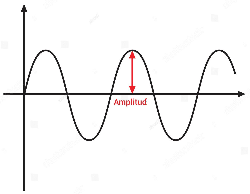

Amplitud de Onda
Es la máxima variación que experimenta una magnitud física que oscila o varía periódicamente en el tiempo o en el espacio. En otras palabras, es la distancia máxima que alcanza una onda desde su posición de equilibrio hasta su punto más extremo.
